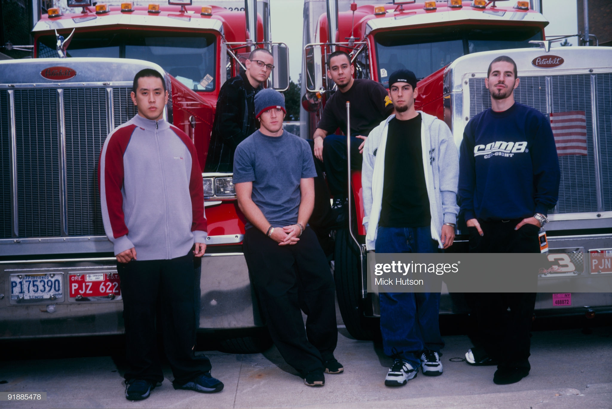

Linkin Park
History
Linkin Park is an American rock band from Agoura Hills, California. The band's current lineup comprises vocalist/rhythm guitarist Mike Shinoda, lead guitarist Brad Delson, bassist Dave Farrell, DJ/keyboardist Joe Hahn and drummer Rob Bourdon, all of whom are founding members. Vocalists Mark Wakefield and Chester Bennington and bassist Kyle Christner are former members of the band. Categorized as alternative rock, Linkin Park has experimented with their music throughout their career by incorporating heavy metal, hard rock, hip hop, pop, and electronica.
Formed in 1996, Linkin Park rose to international fame with their debut studio album, Hybrid Theory (2000), which became certified Diamond by the Recording Industry Association of America (RIAA).[3] Their second album, Meteora (2003), continued the band's success, topping the Billboard 200, and was followed by extensive touring and charity work. Having adapted nu metal and rap metal to a radio-friendly yet densely layered style in their first two albums, the band explored other genres on their third album, Minutes to Midnight (2007), which also topped the Billboard 200.
1996-2000: Early years
Linkin Park was founded by three high school friends: Mike Shinoda, Rob Bourdon, and Brad Delson. The three attended Agoura High School in Agoura Hills, California, a suburb of Los Angeles. After graduating from high school, the three began to take their musical interests more seriously, recruiting Joe Hahn, Dave "Phoenix" Farrell, and Mark Wakefield to perform in their band, then called Xero. Though limited in resources, the band began recording and producing songs within Shinoda's makeshift bedroom studio in 1996, resulting in a four-track demo tape, entitled Xero. Tensions and frustration within the band grew however after they failed to land a record deal. The lack of success and stalemate in progress prompted Wakefield, at that time the band's vocalist, to leave the band in search of other projects. Farrell also left to tour with Tasty Snax, a Christian punk and ska band.
Passed away :( 20 july 2017
On July 20, 2017, Bennington was found dead at his home in Palos Verdes Estates, California. His death was
ruled a suicide by hanging.
Bennington has been credited by several publications as one of the greatest rock vocalists of his
generation.[3]
Hit Parader magazine placed Bennington number 46 on their list of the "100 Metal Vocalists of All Time".[1]
Writing for Billboard, Dan Weiss stated that Bennington "turned nu-metal universal".
Most known albums and musics
I'll list 2 tables below. One out of order with the top 10 known albums and the second will be the most known songs, in order. The second list is classified by Billboard
- In the End (Hybrid Theory)
- Faint (Meteora)
- Shadow of the Day (Minutes to Midnight)
- One Step Closer (Hybrid Theory)
- The Catalyst (A Thousand Suns)
- Breaking the Habit (Meteora)
- Points of Authority (Hybrid Theory)
- Blackout (A Thousand Suns)
- Bleed It Out (Minutes to Midnight)
- The Little Things Give You Away" (Minutes to Midnight)
| Member | Since |
|---|---|
| Chester Bennington | 1999-2017 |
| Mike Shinoda | 1996 |
| Joe Hahn | 1996 |
| Brad Delson | 1996 |
Fonts:
- https://en.wikipedia.org/wiki/Linkin_Park#Hist%C3%B3ria
- https://en.wikipedia.org/wiki/Chester_Bennington
- https://www.gettyimages.com.br/detail/foto-jornal%C3%ADstica/posed-group-portrait-of-linkin-park-left-to-right-foto-jornal%C3%ADstica/91885478?adppopup=true